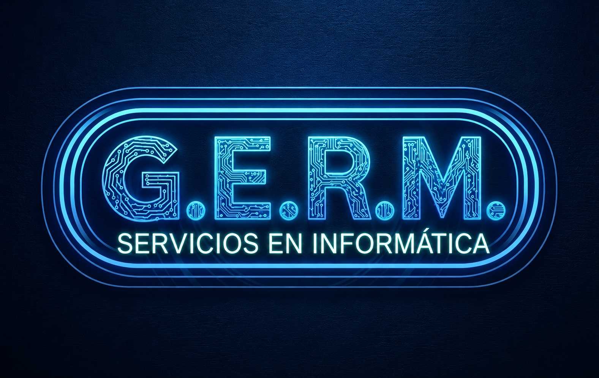
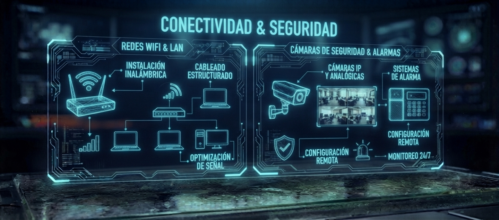
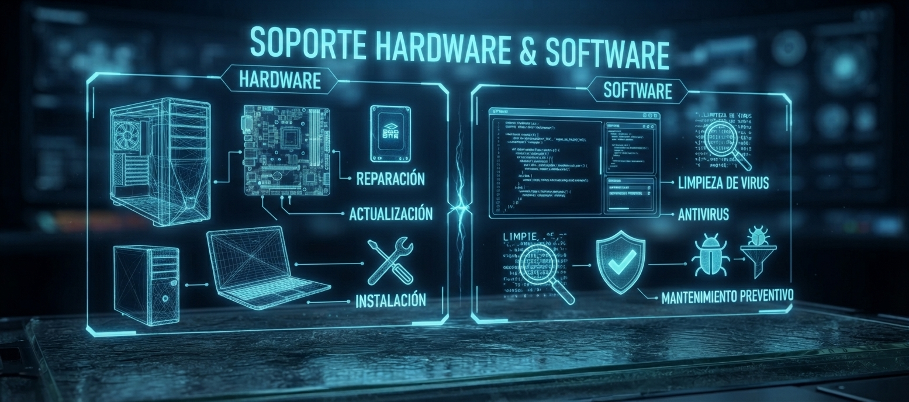
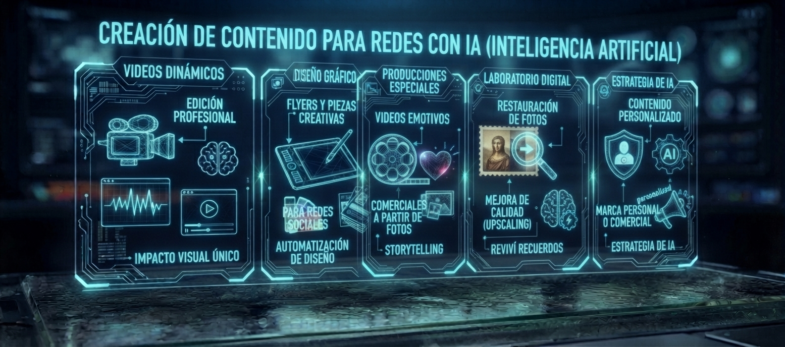
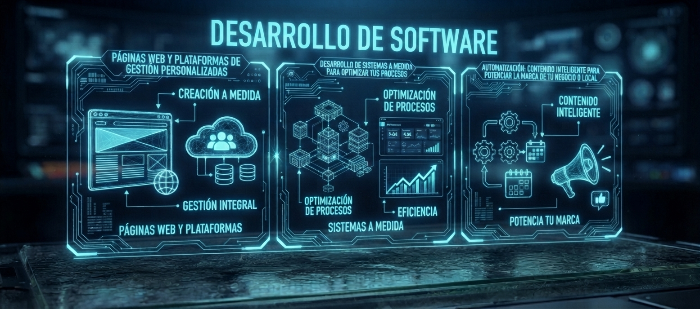

Soluciones tecnológicas integrales para potenciar tu operación.
En G.E.R.M. Servicios en Informáticas nos especializamos en brindar servicios integrales en Tecnologías de la Información (TI) para hogares, PyMEs (Pequeñas y Medianas Empresas) y corporaciones en Neuquén. Nuestro enfoque combina soporte técnico avanzado, conectividad segura y desarrollo de software a medida.
Garantizamos la continuidad operativa de tus sistemas y la protección integral de tu información mediante un servicio riguroso, eficiente y adaptado a requerimientos reales. Nuestro objetivo es que la tecnología potencie tu productividad y te dé la tranquilidad necesaria para enfocarte en hacer crecer tu negocio o disfrutar de tu hogar.
Conectividad & Seguridad

Instalación de cableado estructurado para garantizar conexiones físicas estables, seguras y sin pérdidas de velocidad.
🔌Configuración de enrutadores y puntos de acceso WiFi (Wireless Fidelity) para lograr una cobertura total sin zonas ciegas en toda la casa u oficina.
📶 Optimización y segmentación del tráfico de red para mejorar el rendimiento de todos los equipos conectados. 💻
Cámaras de seguridad y sistemas de alarmas:Instalación estratégica de cámaras de seguridad con visión nocturna, alta definición y almacenamiento local o en la nube.
📹 Configuración de sistemas de alarmas con sensores de movimiento, aperturas magnéticas y sirenas de alta potencia.
🚨 Puesta a punto del acceso remoto para que puedas monitorear todo en tiempo real desde el celu y recibir alertas al instante. 📱🔒
Soporte Hardware & Software
🛠️ Reparación, diagnóstico avanzado y reemplazo de componentes críticos (como memoria RAM [Random Access Memory], discos de estado sólido SSD [Solid State Drive], fuentes de alimentación y pantallas) para devolverle la velocidad y rendimiento a tu PC (Personal Computer) o notebook.
⚙️ Instalación de sistemas operativos, controladores y optimización general del entorno de software para evitar cuellos de botella.
Mantenimiento preventivo y seguridad informática:🧹 Limpieza física profunda de componentes, cambio de pasta térmica en procesadores y revisión de temperaturas.
🛡️ Detección y limpieza profunda de virus, troyanos, spyware y software malicioso, junto con la configuración de antivirus robustos.

Creación de Contenido con IA (Inteligencia Artificial)

🤖 Creación de Contenido para redes con IA (Inteligencia Artificial): Videos Dinámicos: Edición profesional potenciada con herramientas de IA para un impacto visual único.
🎥 Diseño Gráfico: Creación de Flyers (Folletos digitales) y piezas publicitarias creativas para redes sociales.
🎨 Producciones Especiales: Creación de videos emotivos o comerciales a partir de tus fotos y recuerdos.
🎞️✨ Laboratorio Digital: Restauración de fotos antiguas, escaneo y mejora de calidad (Upscaling) con IA. ¡Reviví tus mejores recuerdos!
📸✨ Contenido Personalizado: Soluciones a medida para potenciar tu marca personal o comercial. 📢
Desarrollo De Software
💻 Diseño y desarrollo de sitios web modernos, rápidos y totalmente adaptados a dispositivos móviles utilizando HTML (HyperText Markup Language) y CSS (Cascading Style Sheets).
🌐 Construcción de paneles de control y plataformas web interactivas mediante JavaScript, PHP (Hypertext Preprocessor) y bases de datos SQL (Structured Query Language).
Desarrollo de sistemas a medida y automatización:📊 Creación de software específico para optimizar la gestión interna de tu negocio, automatizando tareas repetitivas y centralizando la información clave.
📢 Integración de herramientas y contenido inteligente mediante API (Application Programming Interface) para potenciar la marca, la comunicación y el alcance de tu local o empresa.

Sobre Mi
Con más de dos décadas de trayectoria en el sector de las Tecnologías de la Información (TI), me desempeño como Analista de Sistemas y desarrollador Full Stack Senior, ofreciendo un enfoque integral que abarca desde la infraestructura física hasta el desarrollo de software a medida para empresas y hogares.
Mi experiencia consolida una sólida base en arquitectura de sistemas y desarrollo corporativo, utilizando frameworks (marcos de trabajo) de backend (servidor) como Laravel, Yii y CodeIgniter, junto con tecnologías modernas de frontend (interfaz de usuario) como Angular y TypeScript (superconjunto de JavaScript que añade tipado estático). Este respaldo técnico me permite diseñar y desplegar plataformas web robustas, sistemas de gestión avanzados y herramientas de automatización orientadas a optimizar la productividad operativa.
Asimismo, mi perfil se complementa con un dominio profundo en infraestructura tecnológica: diseño e implementación de redes LAN (Local Area Network) y WiFi (Wireless Fidelity) de alta estabilidad, integración de sistemas de videovigilancia y seguridad electrónica, y soporte técnico de nivel avanzado en hardware (equipos físicos) y software (programas) para PC (Personal Computer) y servidores.
Bajo la premisa de que la tecnología debe simplificar y potenciar las operaciones, brindo consultoría directa y personalizada. Garantizo estándares de máxima eficiencia, seguridad informática y soporte continuo para acompañar el crecimiento estratégico de cada proyecto u organización.
Contacto
¿Necesitás asesoramiento, soporte técnico o desarrollar un proyecto a medida? Ponete en contacto directo:
💬 WhatsApp: 2994658199
📧 Correo Electrónico: gaston.mena.1982@gmail.com
📍 Ubicación: Neuquén y alrededores (Atención presencial y remota)